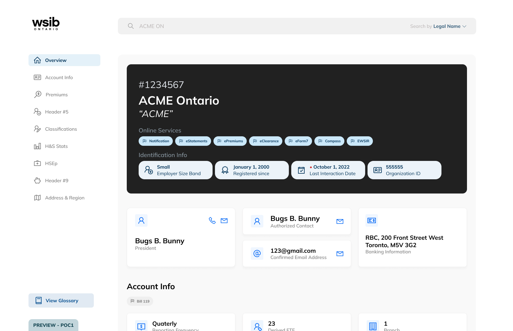
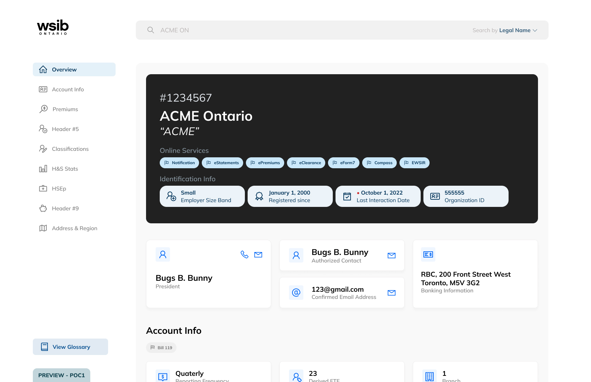

how might we use technology to support newcomers' health and well-being?
this project was the main one i worked during my fall 2023 work term as an undergraduate research assistant (partially funded by an NSERC USRA award), and will be continuing to support on a part-time basis over the winter 2024 school term. public information about the project can be found on the KW4 website. i'll add more information here about my particular work in research and design as permitted.
a news article was written about the project! you can read about it on the HRI portal blog.
how might we make self-led learning easier for all?
in the spring 2023 offering of CS 449 (human-computer interaction), me and a group of students were tasked with designing an application to help people with DIY or self-led experiential learning. the entire user-centered design process was completed, from informational interviews, to paper mockups and wizard-of-oz studies, to desigining a high-fidelity prototype on figma.
in an effort give credit where credit's due, you can read about myself and my group's process on this blog post. even with prior experience in ux, this project was able to strengthen both my research and design skills by introducing me to concepts such as work models and various design strategies such as crazy-8 and storyboarding, and allowing me to learn mobile standards for UX design.
how might we centralize information in a complex system?
at the WSIB innovation lab, the first half of my work term was spent completing the work done by the prior cohort of co-op students regarding the employer dashboard project with internal WSIB. the prior cohort had completed the scoping, job shadowing, and created low and high-fidelity mockups of the employer dashboard. my cohort's goals were to finalize the design through making components and running moderated and unmoderated usability tests on our figma prototypes.
componentalizing
some of our first tasks as a design team were to take the prior design and make components of each UI element in order to make changes post-usability testing easier, and to make the devs' lives easier when turning this into a live proof-of-concept. the full-page dashboard, cards, flags, icons, etc. were all made into components and strung up into one monolith of an interactive prototype. in order to streamline the process as a design team, and to make developer handoff simpler, i spearheaded the use of line awesome's icon font to allow quick changes to UI elements that were turned into components and to avoid the use of detaching instances (almost) altogether.
 

responsiveness
deemed out of scope for developer work at this point of the project, as a team we designed a responsive half-page layout of the employer dashboard. this was informed by prior job shadowing by the previous cohort, where some employees expressed interest in split-screening their dashboard and other tabs. with the UI elements made into components, much of the work was done in resizing and fixing elements, as well as additional overlays for the sidebar created to adapt to a smaller screen. future proof-of-concepts made by future cohorts would be able to pick this up.
usability testing
after finalizing the prototype, both moderated and unmoderated usability tests were held with various employees. after i led the creation of a moderator's guide, our interviews aimed to discover how easily workers could spot and find the relevant information on the dashboard, and determine whether the information provided was relevant for their roles. users spoke their thoughts aloud to us and helped to identify issues with ease of use and navigation. for our unmoderated test, we used Maze, gathering quantitative data on bounce rates of pages and paths taken to finish each task. a System Usability Scale (SUS) was used to gather these ratings and get an overall score on how usable our design was.
analysis and next steps
after usability testing, the data was analyized through affinity mapping on a miro board as a team and key issues were flagged and changed immediately. reccomendations for design changes from this data was aggregated and scoped as part of this current proof-of-concept, or for further iterations past our term. our scoped changes were made and prepared for developer handoff and internal approval.
some of our key takeaways as a team involved how to design elements that are meant to be clickable or not - many of our testers assumed that our flag elements were interactive, even though us as designers did not intend this. in addition, we found that there were some inconsistencies in our labels versus the labels currently used in existing internal systems, leading to confusion. both of these issues show the importance of visual and written language in design, and how clear and simple langauge can help designers create more usable systems for all.
how might we improve efficiency with limited screen real estate?
throughout my work term at arctic wolf, i was tasked with a large UX research project regarding UI real estate and customization for an internal triaging tool. this project included preliminary research and designs, followed by semi-structured interviews and usability tests, and an iterative design process.
early designs
to gain an understanding of the tool before entering the interview process with users, i had went through previous interviews and training recordings. from these, i made both low- and high-fidelity mockups on figma in order to gain a deeper understanding of what issues existed and where changes can be made — this lead to the discovery that different users would all have slightly different issues depending on monitor size, position at the company, or general workflow.
these designs were focused on three areas that were known to be pain points: layout organization options, filters, and the analyst notes pane.

interviews
through the interviewing process, i learned about many pain points that users had within the interface and was able to discover new issues to work into my general solutions. these mainly revolved around poor use of space for smaller fields, and a poor UX with scrollable elements throughout the interface. meeting these users proved to be extremely useful, as they were able to help through continued contact within the iterative design phase.

experience vision
in addition to the project, the company was also engaged in the UX strategy program offered by centre center. in discussion of UX outcomes after research had been underway, an experience vision was created for the general outcome of this project: if we do a great job with reorgnization options, we will improve the users' lives by tailoring the layout to their workflow so that they can triage more efficiently.

next steps
after the main research and design iterations were completed, finalized designs were handed off to developers — but an additional part to the project was added. within interviews, issues were brought up about using this triaging interface for deeper investigations and the real estate issues were further stressed. along with findings from previous UXR projects, an ideation and early design phase was started for a new "investigations" interface, with low-fidelity sketches and high-fidelity wireframes created using miro and figma.


how might we organize our ideas to better solve problems?
scatternote is a proof of concept design for a notes app that helps organize your ideas automatically. this was done as a first attempt of a "case study" before my first experience in ux.
background
throughout university, i've found myself to be the type of person who loves to write my thoughts down when i feel i'm overwhelmed with life. even in discussion with friends, we all tend to write about our feelings in some sort of way; some friends prefer to use a physical journal, some have a never-ending notes file, some use specialized notes apps, and others use a private or spam social media account.
in my personal experiences trying various options, i've made note of various pros and cons; from the full customization of a physical journal being inaccessible in the dark and requiring stationary to use, to a classic notes file having little customization options but easy accessibility, to the questionable privacy of a venting account.

design process
from the discussions and my own personal experiece, i was able to group the main types of notes into the categories of needs, wants, or general thoughts. however - sometimes we don't know how to group our thoughts categorically (leading to the never-ending notes file). this lead to the idea that the software would categorize it automatically for you into those groupings, regardless of the style of input (a long-winded paragraph or short three-line memos).


design concepts
this proof of concept was created with material you (material ui 3) guidelines in mind, inspired by the interface on my phone! this design language is a delight to use on a daily basis, where you'll notice various ways the colours change in applications based on your phone's theme, adding a touch of personality to your personal notes app.
the frames can be seen here, or on the original figma file.


how might we design online courseware to effectively teach information literacy?
at my work term with the university of waterloo library, i had partially worked with the instructional design team in order to develop and aid in the design of a set of online learning modules. my tasks were split between interface development using H5P, a javascript based open education resource framework, and instructional design for the layout and flow of the modules.
accessible development
using H5P, i was tasked to create many interface elements for instructional designers to use within each module. within the 'interactive book' type, necessary functions such as tab groups and having images and text adjacent to one another were not possible. i had both designed and developed these interface elements for use in modules in which i would be filling.
as these modules would be used by students of all abilities, many forms of accessibility testing were undertaken, from colour contrast testing to meet WCAG 2.0 AA standards, to keyboard navigation and screen reader testing with both free options such as ChromeVox and full solutions (on library harware) with JAWS.
design
after adequate elements were created and accessible, i completed the storyboarding process for the flow of each module in the information literacy course, using figma designs from my development stage to support the documents with visuals.

links to the modules can be found on the university of waterloo's OLOR by searching for my name.
how did i learn about design and development?
before entering the field of UX, i had done smaller projects in UI and game development, as well as graphic design.
UI design
recyc-ai:
an app that helps you sort your waste in the correct bins with the help of AI. personally designed and developed the prototype, and mainly worked on the UI implementation
spotify messaging app:
an idea for a messaging client centred around the popular music streaming service, spotify. designed the prototype.
game design
simple shooter: zone defense
a simple arcade shooter / zone defense game. play here.
pow pow punch man
a "janky" fighting game for two players. personally worked on all of the character designs, and implemented various features and menus. play here
graphic design
Edu-Action! infographic
an infographic made to simplify a mathematical research project for the average student's consumption. personally made all designs and customized the layout using figma. read here.
Edu-Action! instructional video
an instructional video made to relate a statistical concect to popular media forms in order to make learning and understanding easier. made a portion of the drawings and designs for the video. watch here.